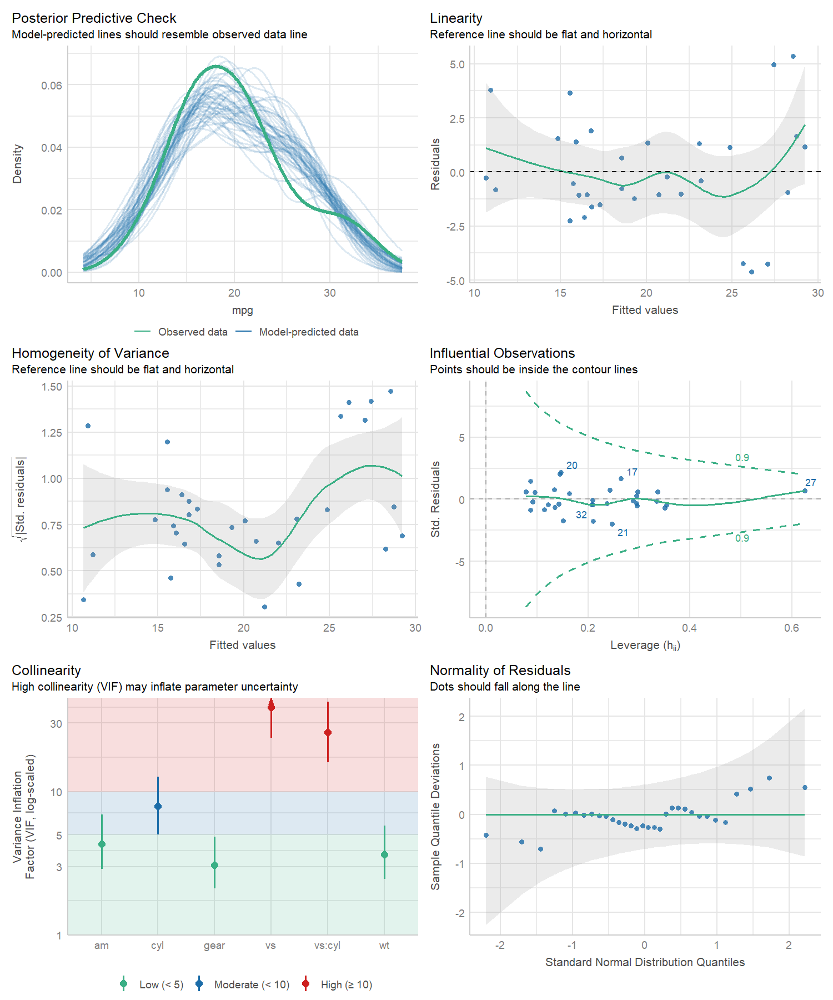
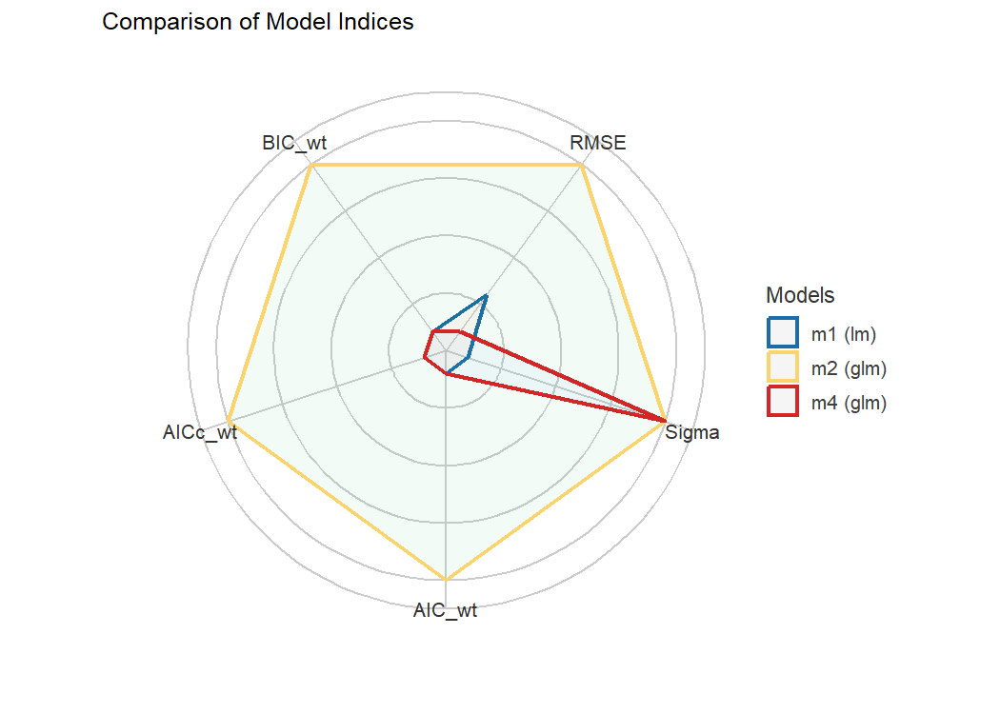

Test if your model is a good model!
A crucial aspect when building regression models is to evaluate the quality of modelfit. It is important to investigate how well models fit to the data and which fit indices to report. Functions to create diagnostic plots or to compute fit measures do exist, however, mostly spread over different packages. There is no unique and consistent approach to assess the model quality for different kind of models.
The primary goal of the performance package is to fill this gap and to provide utilities for computing indices of model quality and goodness of fit. These include measures like r-squared (R2), root mean squared error (RMSE) or intraclass correlation coefficient (ICC) , but also functions to check (mixed) models for overdispersion, zero-inflation, convergence or singularity.
Installation

The performance package is available on CRAN, while its latest development version is available on R-universe (from rOpenSci).
| Type | Source | Command |
|---|---|---|
| Release | CRAN | install.packages("performance") |
| Development | R-universe | install.packages("performance", repos = "https://easystats.r-universe.dev") |
Once you have downloaded the package, you can then load it using:
Tip
Instead of
library(performance), uselibrary(easystats). This will make all features of the easystats-ecosystem available.To stay updated, use
easystats::install_latest().
Citation
To cite performance in publications use:
citation("performance")
#>
#> To cite package 'performance' in publications use:
#>
#> Lüdecke et al., (2021). performance: An R Package for Assessment, Comparison and
#> Testing of Statistical Models. Journal of Open Source Software, 6(60), 3139.
#> https://doi.org/10.21105/joss.03139
#>
#> A BibTeX entry for LaTeX users is
#>
#> @Article{,
#> title = {{performance}: An {R} Package for Assessment, Comparison and Testing of Statistical Models},
#> author = {Daniel Lüdecke and Mattan S. Ben-Shachar and Indrajeet Patil and Philip Waggoner and Dominique Makowski},
#> year = {2021},
#> journal = {Journal of Open Source Software},
#> volume = {6},
#> number = {60},
#> pages = {3139},
#> doi = {10.21105/joss.03139},
#> }The performance workflow

Assessing model quality
R-squared
performance has a generic r2() function, which computes the r-squared for many different models, including mixed effects and Bayesian regression models.
r2() returns a list containing values related to the “most appropriate” r-squared for the given model.
model <- lm(mpg ~ wt + cyl, data = mtcars)
r2(model)
#> # R2 for Linear Regression
#> R2: 0.830
#> adj. R2: 0.819
model <- glm(am ~ wt + cyl, data = mtcars, family = binomial)
r2(model)
#> # R2 for Logistic Regression
#> Tjur's R2: 0.705
library(MASS)
data(housing)
model <- polr(Sat ~ Infl + Type + Cont, weights = Freq, data = housing)
r2(model)
#> Nagelkerke's R2: 0.108The different R-squared measures can also be accessed directly via functions like r2_bayes(), r2_coxsnell() or r2_nagelkerke() (see a full list of functions here).
For mixed models, the conditional and marginal R-squared are returned. The marginal R-squared considers only the variance of the fixed effects and indicates how much of the model’s variance is explained by the fixed effects part only. The conditional R-squared takes both the fixed and random effects into account and indicates how much of the model’s variance is explained by the “complete” model.
For frequentist mixed models, r2() (resp. r2_nakagawa()) computes the mean random effect variances, thus r2() is also appropriate for mixed models with more complex random effects structures, like random slopes or nested random effects (Johnson 2014; Nakagawa, Johnson, and Schielzeth 2017).
set.seed(123)
library(rstanarm)
model <- stan_glmer(Petal.Length ~ Petal.Width + (1 | Species), data = iris, cores = 4)
r2(model)
#> # Bayesian R2 with Compatibility Interval
#>
#> Conditional R2: 0.953 (95% CI [0.941, 0.963])
#> Marginal R2: 0.824 (95% CI [0.713, 0.896])
library(lme4)
model <- lmer(Reaction ~ Days + (1 + Days | Subject), data = sleepstudy)
r2(model)
#> # R2 for Mixed Models
#>
#> Conditional R2: 0.799
#> Marginal R2: 0.279Intraclass Correlation Coefficient (ICC)
Similar to R-squared, the ICC provides information on the explained variance and can be interpreted as “the proportion of the variance explained by the grouping structure in the population” (Hox 2010).
icc() calculates the ICC for various mixed model objects, including stanreg models.
library(lme4)
model <- lmer(Reaction ~ Days + (1 + Days | Subject), data = sleepstudy)
icc(model)
#> # Intraclass Correlation Coefficient
#>
#> Adjusted ICC: 0.722
#> Unadjusted ICC: 0.521…and models of class brmsfit.
icc(model)
#> # Intraclass Correlation Coefficient
#>
#> Adjusted ICC: 0.930
#> Unadjusted ICC: 0.771Model diagnostics
Check for overdispersion
Overdispersion occurs when the observed variance in the data is higher than the expected variance from the model assumption (for Poisson, variance roughly equals the mean of an outcome). check_overdispersion() checks if a count model (including mixed models) is overdispersed or not.
library(glmmTMB)
data(Salamanders)
model <- glm(count ~ spp + mined, family = poisson, data = Salamanders)
check_overdispersion(model)
#> # Overdispersion test
#>
#> dispersion ratio = 2.946
#> Pearson's Chi-Squared = 1873.710
#> p-value = < 0.001Overdispersion can be fixed by either modelling the dispersion parameter (not possible with all packages), or by choosing a different distributional family (like Quasi-Poisson, or negative binomial, see (Gelman and Hill 2007)).
Check for zero-inflation
Zero-inflation (in (Quasi-)Poisson models) is indicated when the amount of observed zeros is larger than the amount of predicted zeros, so the model is underfitting zeros. In such cases, it is recommended to use negative binomial or zero-inflated models.
Use check_zeroinflation() to check if zero-inflation is present in the fitted model.
model <- glm(count ~ spp + mined, family = poisson, data = Salamanders)
check_zeroinflation(model)
#> # Check for zero-inflation
#>
#> Observed zeros: 387
#> Predicted zeros: 298
#> Ratio: 0.77Check for singular model fits
A “singular” model fit means that some dimensions of the variance-covariance matrix have been estimated as exactly zero. This often occurs for mixed models with overly complex random effects structures.
check_singularity() checks mixed models (of class lme, merMod, glmmTMB or MixMod) for singularity, and returns TRUE if the model fit is singular.
library(lme4)
data(sleepstudy)
# prepare data
set.seed(123)
sleepstudy$mygrp <- sample(1:5, size = 180, replace = TRUE)
sleepstudy$mysubgrp <- NA
for (i in 1:5) {
filter_group <- sleepstudy$mygrp == i
sleepstudy$mysubgrp[filter_group] <- sample(1:30, size = sum(filter_group), replace = TRUE)
}
# fit strange model
model <- lmer(Reaction ~ Days + (1 | mygrp/mysubgrp) + (1 | Subject), data = sleepstudy)
check_singularity(model)
#> [1] TRUERemedies to cure issues with singular fits can be found here.
Check for heteroskedasticity
Linear models assume constant error variance (homoskedasticity).
The check_heteroscedasticity() functions assess if this assumption has been violated:
data(cars)
model <- lm(dist ~ speed, data = cars)
check_heteroscedasticity(model)
#> Warning: Heteroscedasticity (non-constant error variance) detected (p = 0.031).Comprehensive visualization of model checks
performance provides many functions to check model assumptions, like check_collinearity(), check_normality() or check_heteroscedasticity(). To get a comprehensive check, use check_model().
# defining a model
model <- lm(mpg ~ wt + am + gear + vs * cyl, data = mtcars)
# checking model assumptions
check_model(model)
Model performance summaries
model_performance() computes indices of model performance for regression models. Depending on the model object, typical indices might be r-squared, AIC, BIC, RMSE, ICC or LOOIC.
Linear model
m1 <- lm(mpg ~ wt + cyl, data = mtcars)
model_performance(m1)
#> # Indices of model performance
#>
#> AIC | BIC | R2 | R2 (adj.) | RMSE | Sigma
#> -----------------------------------------------------
#> 156.010 | 161.873 | 0.830 | 0.819 | 2.444 | 2.568Logistic regression
m2 <- glm(vs ~ wt + mpg, data = mtcars, family = "binomial")
model_performance(m2)
#> # Indices of model performance
#>
#> AIC | BIC | Tjur's R2 | RMSE | Sigma | Log_loss | Score_log | Score_spherical | PCP
#> --------------------------------------------------------------------------------------------
#> 31.298 | 35.695 | 0.478 | 0.359 | 0.934 | 0.395 | -14.903 | 0.095 | 0.743Linear mixed model
library(lme4)
m3 <- lmer(Reaction ~ Days + (1 + Days | Subject), data = sleepstudy)
model_performance(m3)
#> # Indices of model performance
#>
#> AIC | AICc | BIC | R2 (cond.) | R2 (marg.) | ICC | RMSE | Sigma
#> ----------------------------------------------------------------------------------
#> 1755.628 | 1756.114 | 1774.786 | 0.799 | 0.279 | 0.722 | 23.438 | 25.592Models comparison
The compare_performance() function can be used to compare the performance and quality of several models (including models of different types).
counts <- c(18, 17, 15, 20, 10, 20, 25, 13, 12)
outcome <- gl(3, 1, 9)
treatment <- gl(3, 3)
m4 <- glm(counts ~ outcome + treatment, family = poisson())
compare_performance(m1, m2, m3, m4)
#> # Comparison of Model Performance Indices
#>
#> Name | Model | AIC (weights) | BIC (weights) | RMSE | Sigma | Score_log | Score_spherical | R2 | R2 (adj.) | Tjur's R2 | Log_loss | PCP | AICc (weights) | R2 (cond.) | R2 (marg.) | ICC | Nagelkerke's R2
#> ------------------------------------------------------------------------------------------------------------------------------------------------------------------------------------------------------------------------
#> m1 | lm | 156.0 (<.001) | 161.9 (<.001) | 2.444 | 2.568 | | | 0.830 | 0.819 | | | | (>.999) | | | |
#> m2 | glm | 31.3 (>.999) | 35.7 (>.999) | 0.359 | 0.934 | -14.903 | 0.095 | | | 0.478 | 0.395 | 0.743 | (>.999) | | | |
#> m3 | lmerMod | 1764.0 (<.001) | 1783.1 (<.001) | 23.438 | 25.592 | | | | | | | | 1764.5 (>.999) | 0.799 | 0.279 | 0.722 |
#> m4 | glm | 56.8 (<.001) | 57.7 (<.001) | 3.043 | 1.132 | -2.598 | 0.324 | | | | | | (>.999) | | | | 0.657General index of model performance
One can also easily compute and a composite index of model performance and sort the models from the best one to the worse.
compare_performance(m1, m2, m3, m4, rank = TRUE)
#> # Comparison of Model Performance Indices
#>
#> Name | Model | RMSE | Sigma | AIC weights | BIC weights | Performance-Score
#> --------------------------------------------------------------------------------
#> m2 | glm | 0.359 | 0.934 | 1.000 | 1.000 | 100.00%
#> m4 | glm | 3.043 | 1.132 | 2.96e-06 | 1.63e-05 | 46.89%
#> m1 | lm | 2.444 | 2.568 | 8.30e-28 | 3.99e-28 | 46.09%
#> m3 | lmerMod | 23.438 | 25.592 | 0.00e+00 | 0.00e+00 | 0.00%Visualisation of indices of models’ performance
Finally, we provide convenient visualisation (the see package must be installed).
plot(compare_performance(m1, m2, m4, rank = TRUE))
Testing models
test_performance() (and test_bf, its Bayesian sister) carries out the most relevant and appropriate tests based on the input (for instance, whether the models are nested or not).
set.seed(123)
data(iris)
lm1 <- lm(Sepal.Length ~ Species, data = iris)
lm2 <- lm(Sepal.Length ~ Species + Petal.Length, data = iris)
lm3 <- lm(Sepal.Length ~ Species * Sepal.Width, data = iris)
lm4 <- lm(Sepal.Length ~ Species * Sepal.Width + Petal.Length + Petal.Width, data = iris)
test_performance(lm1, lm2, lm3, lm4)
#> Name | Model | BF | Omega2 | p (Omega2) | LR | p (LR)
#> --------------------------------------------------------------
#> lm1 | lm | | | | |
#> lm2 | lm | 3.45e+26 | 0.69 | < .001 | -6.25 | < .001
#> lm3 | lm | 4.69e+07 | 0.36 | < .001 | -3.44 | < .001
#> lm4 | lm | 7.58e+29 | 0.73 | < .001 | -7.77 | < .001
#> Each model is compared to lm1.
test_bf(lm1, lm2, lm3, lm4)
#> Bayes Factors for Model Comparison
#>
#> Model BF
#> [lm2] Species + Petal.Length 3.45e+26
#> [lm3] Species * Sepal.Width 4.69e+07
#> [lm4] Species * Sepal.Width + Petal.Length + Petal.Width 7.58e+29
#>
#> * Against Denominator: [lm1] Species
#> * Bayes Factor Type: BIC approximationCode of Conduct
Please note that the performance project is released with a Contributor Code of Conduct. By contributing to this project, you agree to abide by its terms.
Contributing
We are happy to receive bug reports, suggestions, questions, and (most of all) contributions to fix problems and add features.
Please follow contributing guidelines mentioned here:
https://easystats.github.io/performance/CONTRIBUTING.html